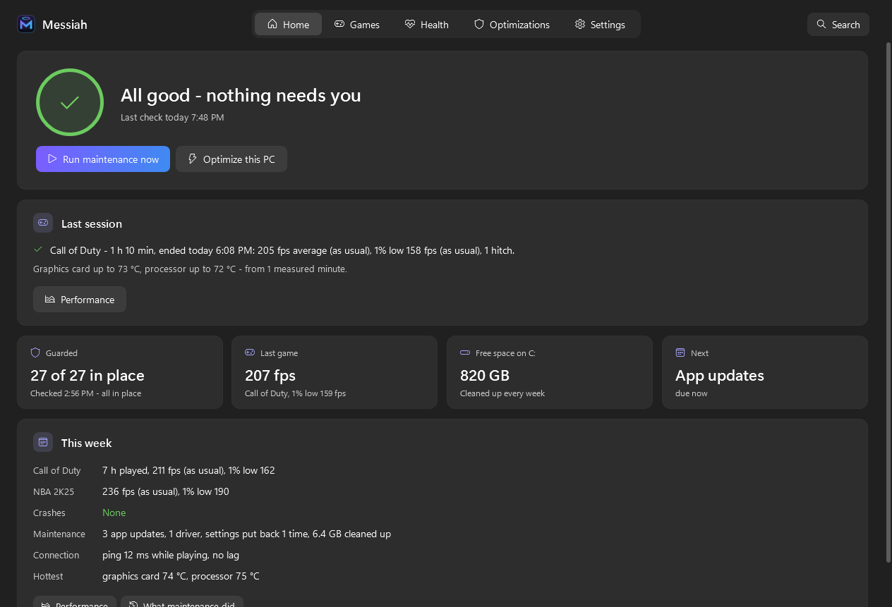
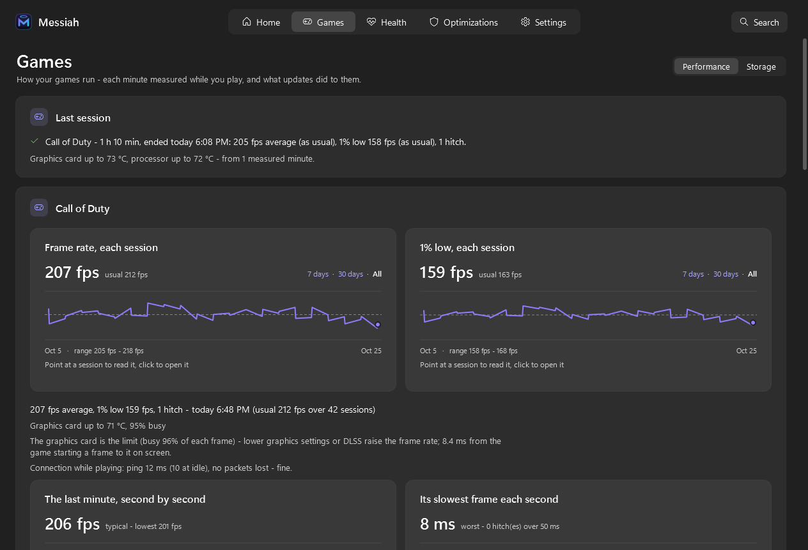
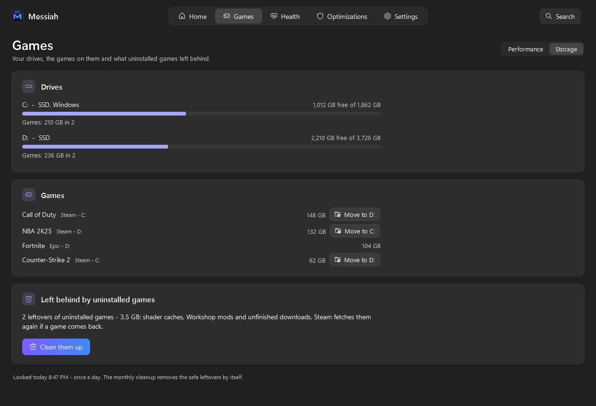

One download turns Windows 11 into a fast, clean gaming PC - then keeps it that way: drivers, updates, crash checks and cleanup happen by themselves, and never while you play.
Download for Windows
About 20 minutes, most of it without you.
Click the button above and open the file. If your browser asks, choose Keep.
Allow the administrator prompt, read what it will do, and type YES.
It tunes Windows, installs your apps and optimizes the PC. Messiah opens with a welcome page showing what it did.
Messiah does it, checks it, and puts it back if Windows changes it.
Bloat, ads and telemetry gone, gaming tweaks on, every monitor at its best refresh rate - and each game's frame rate measured while you play, so you see what an update did.
Driver and app updates, cleanup and checks run in the background - held while you play, never a restart while you're at the PC.
Blue screens explained, a memory test at night, and a new graphics driver that crashes or runs slower is rolled back by itself.
Ping, jitter and packet loss measured during your matches - each session says whether lag was the connection or the PC, with tips that fit.
Every drive and game at a glance, one click to clean what uninstalled games left behind, and Steam games moved to another drive.
Optional: switch on Claude in the app to ask anything about your PC and have it fixed for you. Off by default - no account needed.
One app, five tabs. Most days it just says all good.


Free and open source. No account - you pick a local username during a fresh install, and the optional AI assistant uses your own Claude account only if you switch it on.
It removes Windows bloat and ads (Copilot, Widgets, Teams, OneDrive, ~50 preinstalled apps), turns off telemetry and the built-in AI features, applies gaming tweaks and installs Steam, Discord, Chrome and the NVIDIA App on NVIDIA cards. The app's Optimizations tab lists every change, with a switch for each.
By itself, in the background - your PC gets each new version at its next login, only after that version passed a full test install. Nothing to do.
A USB stick (8 GB or bigger) that installs a slimmed-down Windows 11 and sets the PC up by itself - no Edge, Teams, Outlook, OneDrive or Xbox app, and Windows can still update and repair itself.
Open PowerShell and paste:
irm https://github.com/Kevincxv/pc-setup-kit/releases/latest/download/install.ps1 | iex
In the app: Settings > Tools > Uninstall Messiah. Or run C:\PCSetupKit\uninstall.ps1 (add -RevertTweaks to put Windows' settings back). Your apps, files and games stay.